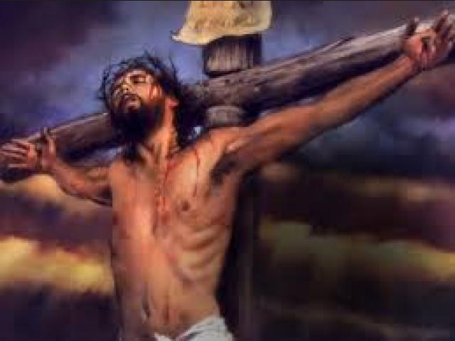
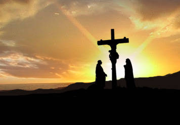
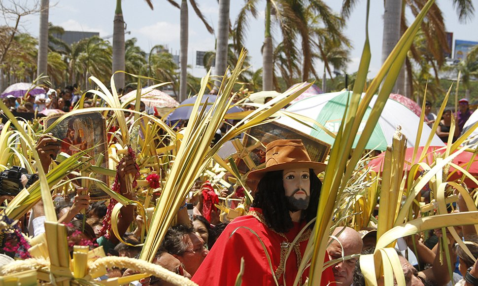
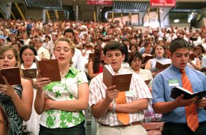
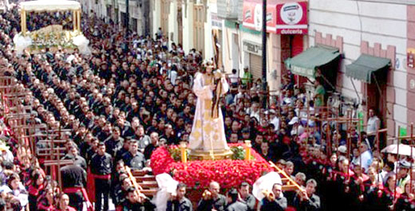
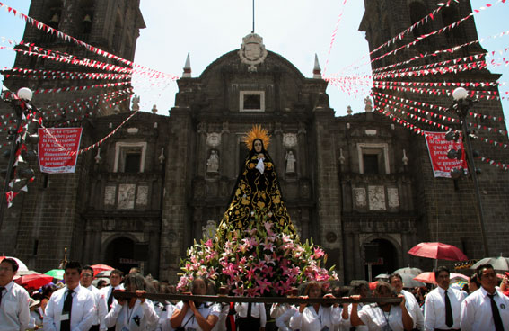
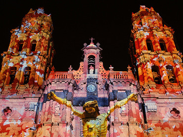
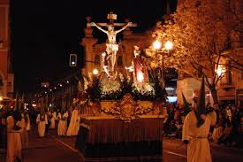
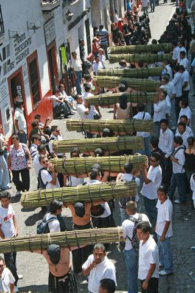
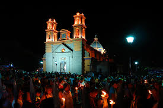

La Semana Santa es la conmemoración anual cristiana de la Pasión, Muerte y Resurrección de Jesús de Nazaret. Por eso, es un período de intensa actividad litúrgica dentro de las diversas confesiones cristianas. Da comienzo el Domingo de Ramos y finaliza el Domingo de Resurrección,aunque su celebración suele iniciarse en varios lugares el viernes anterior (Viernes de Dolores) y se considera parte de la misma el Domingo de Resurrección. La fecha de la celebración es variable (entre marzo y abril según el año) ya que depende del calendario lunar. La Semana Santa va precedida por la Cuaresma, que finaliza en la Semana de Pasión donde se celebra la eucaristía en el Jueves Santo, se conmemora la Crucifixión de Jesús el Viernes Santo y la Resurrección en la Vigilia Pascual durante la noche del Sábado Santo al Domingo de Resurrección. Durante la Semana Santa tienen lugar numerosas muestras de religiosidad popular a lo largo de todo el mundo, destacando las procesiones y las representaciones de la Pasión.
Las procesiones se estilan en la mayoría de las grandes religiones: hinduismo, sintoísmo, islam, catolicismo. Sin embargo, existen ciertas iglesias cristianas (protestantes, evangélicos, entre otros), que excluyen esta práctica por considerarla una forma de idolatría; esto según su inteligencia de su respectiva Biblia.
Entre algunas Religiones que lo celebran están:
La Semana Mayor para los católicos es la época en la que se recuerda y celebra los hechos más relevantes en la vida de Jesús de Nazaret (la Pasión, Muerte y Resurrección), comenzando con el llamado Domingo de Ramos y finalizando el Domingo de Resurrección o también llamado de Pascua. Tiene lugar después de la Cuaresma, el ciclo de cuarenta días que abarca desde el Miércoles de Ceniza hasta el Jueves Santo. Concretamente, la celebración comienza el domingo de Ramos y finaliza el Sábado Santo, aunque en algunos lugares se adelanta al viernes anterior (el de Dolores) y se prolonga hasta el Domingo de Resurrección.
Para la iglesia cristiana, la Semana Santa es el tiempo para recordar la muerte de Cristo. Para conmemorarla, se congregan en una jornada de oración y adoración, la cual inicia el Jueves Santo a las 9:00 de la noche y se extiende por 24 horas. En esta reunión se dan cita grupos artísticos y musicales, ya que los cristianos creen que “Dios habita en medio de la alabanza”. Además, para ellos es fundamental la vigilia, es decir, pasar una noche en vela y adorando a Dios. La jornada de adoración comienza el jueves en la noche y termina el viernes. En estas 24 horas, la comunidad cristiana ora por los enfermos y por las necesidades de cada una de las personas que habitan en este mundo. En cuanto a la comida y la vestimenta, esta comunidad no tiene restricción a la hora de ingerir carnes rojas, ni de lucir determinados atuendos. En lo que respecta a la Semana Santa, indica que conmemoran la muerte del Señor Jesucristo a través de la reflexión individual, para tal fin los días jueves, viernes y domingo tienen encuentros personales.
Para los testigos de Jehová la Semana Santa comienza el 14 de abril, o 14 de Nisán, y comprende desde la puesta de sol hasta la próxima. De acuerdo con su tradición, la única acción que Jesús mandó a conmemorar en esta fecha es la última cena; por esto, la comunidad se reúne en el Salón del Reino para recordar esta acción, reflexionar sobre ella y el significado de la muerte y resurrección de Jesús, como rey mas no como Dios todopoderoso. En esta ceremonia, al igual que lo hizo Jesús, se reparte el pan y el vino, pero no todos son elegidos de participar de esta cena, pues este honor depende de los méritos de cada persona.
La Semana Santa de los mormónes inicia desde el Lunes Santo, y como suelen hacer muy habitualmente durante muchas semanas del año, se reúnen en lo que llaman la “noche del hogar” para recordar pasajes de la Biblia protestante y, sobre todo, de sus libros sagrados. Son momentos de estar en familia, de compartir, y recordar cómo Jesús, que era un hombre según ellos, sólo un hombre, se hizo Dios también, otro dios, por sus propias fuerzas y comportamiento, según ellos afirman, y esto mismo es lo que ellos también quieren hacer, convertirse en dioses y regentar el gobierno de algunos sistemas solares del universo. En general, a pesar de sus diferencias de doctrina, es importante considerar que estos días no son el único momento para adorar a Dios y hallar comunión consigo mismo. Sumado a eso, las actividades en la familia también contribuyen a nutrir el alma. Por lo tanto, esta Semana Santa… ¡Ama, agradece y vive en paz!

El Vía Crucis de Atlixco, en el estado mexicano de Puebla, reúne desde hace más de un siglo en Semana Santa a un grupo de penitentes capaces de traspasar el umbral del dolor por su devoción, al salir en procesión encapuchados y descalzos, con grilletes y coronas de espinas.Con un paso lento y quejumbroso, cientos de hombres semidesnudos y encadenados caminan en busca del perdón divino a través del dolor.

Bajo el anonimato, el devoto confiesa que lleva un lustro participando y que lo hace con orgullo por todos los favores que el Señor le ha dado.
En otros casos, se agradece la cura de algún familiar que padecía una grave enfermedad.Las principales calles de este municipio situado a unos 150 kilómetros por carretera de la capital mexicana, se cubren con alfombras decorativas elaboradas con serrín de colores en un recorrido de cinco kilómetros que comienza en el Exconvento de San Francisco.

La alfombra de flores fue colocada sobre una superficie de 900 metros este año, se suman figuras que le dan un toque en tercera dimensión se trata de éstas mariposas que tal parece que están volando encima del tapete. Así recibe Atlixco a los visitantes en esta semana santa, con un tapete monumental en tercera dimensión El tapete es alusivo a la temporada de semana santa y al inicio de la primavera, en él se aprecian figuras como la de Cristo, un sol, flores, y el slogan de "Atlixco, pueblo mágico”
Desde hace 24 años, en la ciudad de Puebla se lleva a cabo la Procesión de Viernes Santo, que parte del atrio de la Catedral de Puebla. La procesión se realizaba los Viernes Santos desde tiempos coloniales, pero se suspendió a causa de las Leyes de Reforma. Es considerada uno de los actos más significativos de la “Semana Mayor” y a ella asisten más de 150 mil feligreses. La organización principal se concentra en 40 personas que trabajan desde enero; pero participan tres mil fieles, ya incluidos los integrantes de la Cofradía de los Nazarenos. Las imágenes elegidas para la procesión son representativas para los poblanos y se les tiene mucha devoción. En 1995, se pidió a las mojas de Santa Mónica incluir al Señor de las Maravillas, en lugar de la escultura del Cristo de la Expiación, que se encuentra en la Iglesia del Carmen. Las demás imágenes participantes son: Nuestra Señora de Dolores, de la Iglesia del Carmen. Nuestra Señora de la Soledad, de la parroquia dedicada a esta advocación. El Jesús Nazareno, de la parroquia de San José. Jesús Nazareno de las tres caídas, de la iglesia del barrio de Analco. Este 2016, la Procesión de Viernes Santo iniciará a las 12 de la tarde; el recorrido irá hasta el Paseo Bravo y de regreso a la Catedral, al rededor de las 15:00 horas, donde se da la bendición y concesión de indulgencia plenaria.
 Los habitantes de Iztapalaba, una de las 16 delegaciones de la Ciudad de México, representan la pasión de Cristo desde hace 169 años. La escenificación de la Semana Santa surgió a raíz de una epidemia de cólera que afectó a la zona en 1843, habitada entonces por unas 20,000 personas, en su mayoría indígenas, de acuerdo con el cronista de Iztapalapa, Jorge de León. Los habitantes de la zona hicieron la promesa de emprender una procesión al Cerro de la Estrella si la peste acababa. Cuando la epidemia cesó, los vecinos del lugar hicieron una peregrinación con imágenes de vírgenes y santos, y dos años después se celebró la primera escenificación teatral de La pasión de Jesucristo. La declaración de la representación de la Semana Santa de Iztapalapa como Patrimonio Cultural Intangible se suma a las de los Juegos de Pelota de origen prehispánico, el Barrio de San Ángel y la Orquesta Típica de la Ciudad de México.
La Procesión del Silencio de San Luis Potosí es un evento anual que conmemora la pasión y muerte de Cristo y a Nuestra Señora de la Soledad. Ocurre en la noche del Viernes Santo, empezando en el Templo del Carmen, de donde es originario, y el recorrido sigue a través de las calles del centro histórico de la ciudad de San Luis Potosí. Durante el evento se encuentran los sonidos de tambores y cornetas, pero ningún participante o espectador habla, ameritando su nombre. Es una de las celebraciones de Semana Santa más importante de México y fue declarada parte del patrimonio cultural del estado de San Luis Potosí en el 2013. Organizado por la Asociación de Tradiciones Potosinas,la procesión se conmemora como un acto de luto por la Pasión de Cristo.Es una recreación del Via Crucis, con cada estación marcada por un paso de misterio con imágenes de pasión.Esta procesión es una de las celebraciones más importantes de la Semana Santa en México, uno de los eventos religiosos más importantes para el estado de San Luis Potosí y emblema para la ciudad.También es un evento turístico muy grande, donde asisten aproximadamente más de 160.000 visitantes de la ciudad, con cerca del quince por ciento que vienen de fuera de México.5 6 7
 El inicio de esta tradición data de mediados del siglo XVI y ha perdurado hasta nuestros días celebrándose cada año, según lo marque el calendario católico, en el mes de marzo o abril. Esta celebración comienza el Domingo de Ramos cuando se conmemora la entrada triunfal de Jesús a Jerusalén. Este día los feligreses salen a las calles con palmas y ramos de laurel adornados para ser bendecidas por un cura católico. A partir del Lunes Santo se realizan una serie de procesiones nocturnas en las cuales los fieles marchan solemnes y silenciosos al compás de los tambores, portando velas que se derriten en sus manos siguiendo la ruta de los templos de la Santísima Trinidad, Santa Veracruz, el exconvento de San Bernardino de Siena, la parroquia de Santa Prisca y San Sebastián. El Martes Santo se lleva a cabo una de las procesiones más impactantes de México: la Procesión de las Ánimas. Encabezada por San Nicolás Tolentino, un santo de tamaño natural que viste un sobrio faldón negro y muestra brotes de sangre en la espalda por flagelación, esta procesión es un de las más concurridas, en ella participan penitentes de ambos sexos divididos en: encruzados, flagelantes y ánimas. Los “encruzados” llevan el rostro cubierto con un “capirote” (capucha negra) y un faldón con el cual adoptan cierto anonimato. Caminan descalzos con los tobillos encadenados uno al otro y llevan en la espalda un rollo de 144 varas de zarzas con espinas que llega a pesar hasta 50 kilos y que, al paso, lacera su cuello y espalda hasta sangrar. Por su parte, los “flagelantes” llevan en brazos una cruz de madera de hasta seis kilogramos de peso, un rosario, y una “disciplina” (una especie de fuete) hecha con crin de caballo y clavos con las que se auto flagelan la espalda durante todo el recorrido hasta provocar el sangrado. Para las mujeres el sacrificio no es menor, caminan completamente vestidas de negro, descalzas y completamente encorvadas hacia enfrente, con un pesado crucifijo en los antebrazos y un rosario. Otras llevan cirios encendidos en ambas manos y caminan con los tobillos aprisionados con cadenas. A pesar del anonimato que se guarda durante la procesión, para formar parte de ella es necesario registrarse con anterioridad. Durante el resto de la semana continúan los ritos propios de la religión católica: el miércoles se conmemora la aprehensión de Jesús; el Jueves Santo se lleva a cabo la simbólica ceremonia del Lavatorio de pies y la última Cena. El viernes se recuerda el Vía Crucis, donde Jesús es juzgado, flagelado y finalmente muere en la cruz. Para el Sábado de Gloria todo el pueblo se mantiene en silencio en señal de luto hasta el Domingo de Resurrección donde a través de una representación vuelve el Cristo resucitado. Ven a Taxco y sé testigo del fervor que los guerrerenses guardan a sus antiguos rituales.
 El Primer Viernes de Cuaresma la Festividad del Señor de Las Misericordias en el Templo de San Juan de Dios, el Segundo Viernes de Cuaresma la Festividad del Señor de Las Maravillas en el Templo de La Defensa , el Cuarto Viernes de Cuaresma la Festividad de la Samaritana en la Ciudad de Oaxaca, el Quinto Viernes de Cuaresma la festividad del Señor de las Peñas en el Templo del Carmen Alto y la Festividad del Señor San Lázaro en la Villa de San Antonino Castillo Velasco. El Sexto Viernes de Cuaresma, es el viernes de Dolores, una tradición de gran devoción en donde se rinde culto a la madre de Dios, colocando el Altar de la Virgen de Dolores, llegando así a la Semana Santa, la cual inicia para los Oaxaqueños con el Domingo de ramos, rememorando la entrada de Jesús en Jerusalen y la Festividad del Señor del Burrito en la Población de San Antonino Castillo Velasco. El Lunes Santo se celebra con gran respeto en la Villa de Zaachila con una serie de actividades costumbristas relacionadas con la Semana Mayor, el Martes Santo con la Festividad del Señor de las tres caídas en el barrio de Xochimilco , el miércoles santo hay exhibiciones de los estandartes y relicarios de las diferentes cofradías y relicarios de los diversos barrios de la ciudad de Oaxaca, el Jueves Santo se realiza después de las seis de la tarde la Visita de Los Siete Templos, en donde los altares representan la última cena de Jesús con sus apóstoles y el Viernes Santo se realiza la Procesión del Silencio en donde participan las diversas cofradías de la ciudad de Oaxaca.